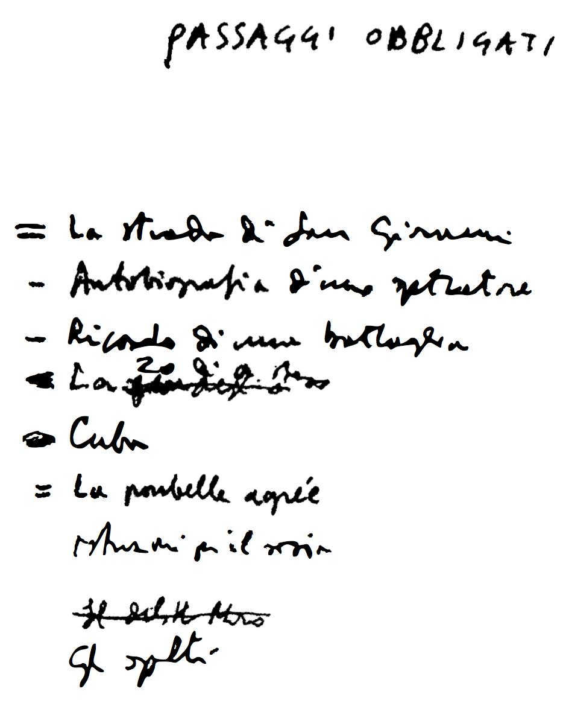

Italo Calvino
Çocukluğumda, İtalya'nın kalanından değişik sayılacak küçük bir kentte büyüdüm: San Remo'da o zamanlar henüz yaşlı İngilizler, Rus grandükleri, sıra dışı ve kozmopolit kimseler yaşardı. Benim ailem de, gerek San Remo için, gerek o zamanın İtalya'sı için alışılmadık türdendi: Annemle babam gençliği geride bırakmış kimselerdi, bilim adamıydılar, doğaya taparlardı, özgür düşünüşlüydüler, kişilikleri birbirinden çok ayrıydı, her ikisi de ülkenin iklimine ters düşüyorlardı. Babam San Remoluydu, Mazzinici, Cumhuriyetçi, kilise karşıtı. Mason bir aileden geliyordu, gençliğinde Kropotkinci anarşistmiş, sonra reformcu sosyalist olmuş, uzun yıllar Latin Amerika'da yaşamıştı ve Dünya Savaşı deneyimini yaşamamıştı; annem Sardinyalıydı, laik bir aileden geliyordu, toplumsal görev ve bilim dinine göre yetiştirilmişti, 1915'te müdahale yanlısı bir sosyalistmiş, ama inatçı bir barış imanı vardı. Yurt dışında uzun yıllar geçirdikten sonra, faşizm iktidara geçiyorken İtalya'ya dönmüşler ve bildiklerinden farklı, anlaşılması güç bir İtalya bulmuşlardı. Babam mesleki bilgisini ve dürüstlüğünü ülkesinin hizmetine sunmayı denemişse de, başarılı olamamıştı, faşizmi kendi yaşamış olduğu Meksika devrimlerinin ölçüsüne vurmaya çalışmıştı, eski Ligurya reformculuğunun rahatlatıcı kılgısal ruhu vardı kendisinde; annem Croce manifestosunu imzalamış bir üniversite profesörünün kız kardeşi olarak katı bir faşizm karşıtıydı. Yönelim ve deneyim bakımından her ikisi de kozmopolittiler, her ikisi de savaş öncesi sosyalizminin genel kapsamlı yenilenme atılımı içinde büyümüşlerdi, sempatileri liberal demokrasiden çok, bütün olağandışı ilericilik hareketlerine yöneliyordu: Kemal Atatürk'e, Gandhi'ye, Rus Bolşeviklerine. Bu tabloya faşizm birçok yoldan biri olarak giriyordu, ama cahillerle namussuzların açtığı hatalı bir yoldu. Ailemde faşizme eleştiriler onun şiddetinden, bilgi fukaralığından, açgözlülüğünden, eleştiri özgürlüğünün yok edilmesinden, dış politikadaki saldırganlığından başka, en çok iki temel günahı üzerinde toplanıyordu: Krallık yönetimiyle işbirliği ve Vatikan'la barışması....
25 Temmuz'da, faşizm gibi bir tarihsel trajedinin Büyük Konsey'in kararnamesi gibi olağan bir idari işlemle sona erdirilmesinden ötürü ben düş kırıklığına uğramıştım, kendimi aşağılanmış hissediyordum. Devrimi, İtalya'nın savaşım yoluyla yeniden yaratılmasını düşlüyordum. 8 Eylül'den sonra bu belli belirsiz düşün gerçekleştiği ortaya çıktı: Ben de kendi düşlerinin gerçekleşmesini yaşamanın ve o düzeyi tutturabilmenin ne denli güç olduğunu öğrenmek zorunda kaldım.
Komünizmi seçişim öyle ideolojik nedenlerle falan destekleniyor değildi. "Sil baştan" etmenin gereğini duyuyordum ve o yüzden kendimi anarşist olarak tanımlamıştım. Sovyetler Birliği'ne karşı genelde duyulan bütün güvensizlikler ve eleştirilerle silahlanmıştım, ama annemle babamın oldum olası Sovyet hayranlıklarından da etkileniyordum. Ancak en şiddetle duyduğum şey, o anda önemli olanın eylem olduğuydu, komünistler de en aktif ve örgütlü güçtüler. Bölgemizden çıkan ilk partizan lider genç Doktor Felici Cascione'nin Monte Alto'da Almanlara karşı savaşırken vurulduğunu işittiğimde, komünist bir arkadaşıma partiye girme isteğimi açtım.
Beni hemen işçi yoldaşlarla ilişkiye soktular. Gençlik Cephesi'ndeki öğrencileri örgütlemekle görevlendirildim ve yazılarımdan biri teksir makinesiyle çoğaltılarak gizlice dağıtıldı. (Şu yazdığım ve bana kalsa yazmayı sürdüreceğim bir sürü yarı mizahi savunmadan biriydi, benim komünizme geçişimi koşullandıran anarşist türden eleştirilerin çevresinde dönüyordu: Geleceğin dünyasında ordunun, polisin, bürokrasinin varlıklarını sürdürmeleri. Ne yazık ki, yazıyı saklamamışım, ama günün birinde saklamış olan eski bir arkadaşımla karşılaşma umudumu hâlâ koruyorum.)
İtalyan Direnişi'nin dama tahtasının en dış ucunda yer alıyorduk, doğal kaynaklardan da, müttefik yardımlarından da, yetkin siyasal rehberlerden de yoksunduk; böyleyken gene de bizimki bütün o yirmi ay boyunca en şiddetli ve amansız savaşımın verildiği sıcak noktalardan biri oldu ve ölü sayısı çok yükseldi. Partizan savaşı anılarımı birinci kişi olarak anlatmak bana hep güç gelmiştir. Bunu değişik anlatı türlerinde yapabilirim ve hepsi de aynı oranda gerçek olur: Oyuna pey olarak sürülen sevgilerin, tehlikelerin, kaygıların, kararların, ölümlerin duygusal sarsıntısını anımsayabildiğim gibi, siyasal hazırlığı bulunmayan, hiçbir yaşam deneyimi olmayan, o güne değin aile çevresinde yaşamış bir genç burjuvanın karşılaştığı belirsizlikleri, hataları, terslikleri, talihsizlikleri güldürü-destan türlerinde de anlatabilirim.
Burada hatırlatmadan geçemeyeceğim şey (zaten aynı kişi bu notlarda ortaya çıktı bile) o ayların deneyiminde annemin tuttuğu yerdir, doğal adalet ve aile erdemi olarak algılanan bir Direniş sırasında sebat ve cesaret örneği olduğuydu, iki oğlunu silahlı mücadeleye katılmaya özendirdi, SS'ler ve askerler karşısında vakarlı ve kararlı davrandı, rehin olarak tutuldukları uzun sürede, kara tugay üç kez babamı gözlerinin önünde kurşuna dizecek gibi yaptığı zaman da öyle. Anaların rol aldıkları tarihsel olaylar, doğal olguların büyüklüğüne ve yenilmezliğine erişir.
Sinema, kişisel eğitimimin başlıca kaynaklarından biri olmuştur. '30'lu, '40'lı yıllarda. San Remo'da, sinemaya neredeyse her gün, hatta bazen günde iki kez gidiyordum. Üçü -Centrale, Supercinema ve Sanremese- birinci vizyon, ikisi ise ikinci vizyon filmler gösteren ya da daha küçük beş sinema vardı. Özellikle, Amerikan ve Fransız filmlerini seyrediyordum. Bengal Süvarileri'nin, Denizde Isyan'nin, başrollerini Myrna Loy ile William Powell'in paylaştıkları polisiye-aşk komedilerinin, Fred Astaire ve Ginger Rogers müzikallerinin, Charlie Chan'm detektif filmlerinin ve Boris Karloff'un korku filmlerinin çağıydı. Jean Harlow'un ölümüne kadar -yıllar sonra, her simgenin nevrotik yükünün daha bilincinde olan bir çağda, Marilyn Monroe'nun ölümü şeklinde yeniden yaşadığım bir ölümdü bu- her şeyi seyrettim.
Benimki bireysel bir tutkuydu; gerçi o dönemde bugünün entelektüel sinema sevgisi henüz yoktu, ama gene de okul arkadaşlarımla, öteki gençlerle buluştuğum bir yerdi sinema Sinema, kitaplardan çok daha fazla, edebiyattan çok daha fazla bir sohbet ve tartışma konusuydu.
